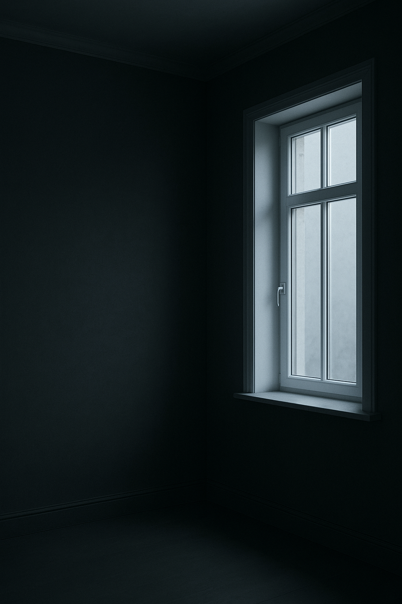

Referência técnica
Quem especifica
bem, guarda
referência.
bem, guarda
referência.
Salve este post e tenha os dados do PVC de alto padrão à mão na hora de projetar.
Salve este post para consultar depois